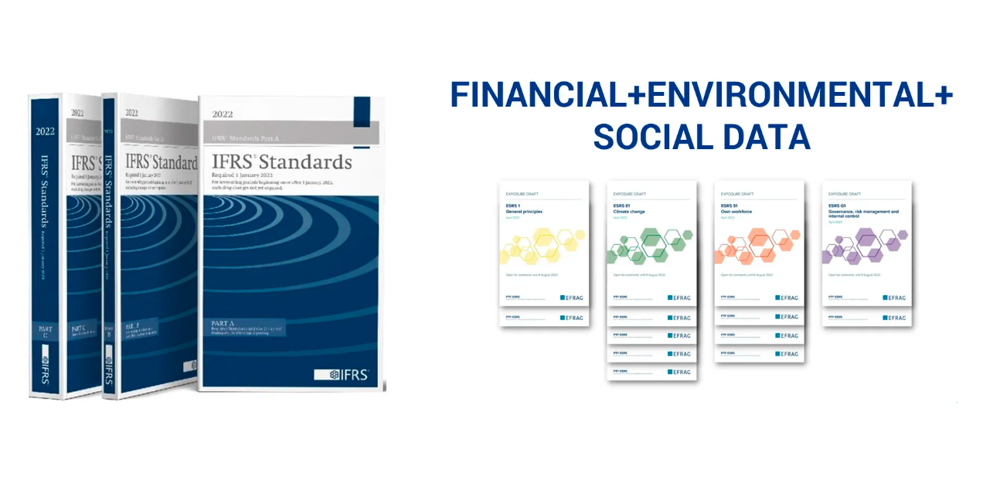
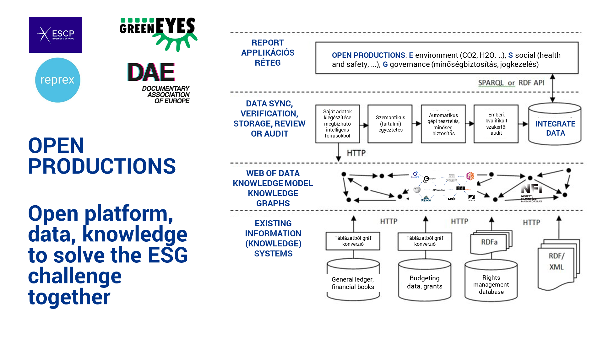
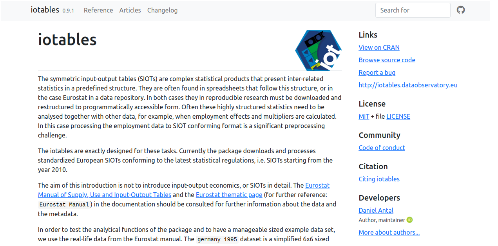
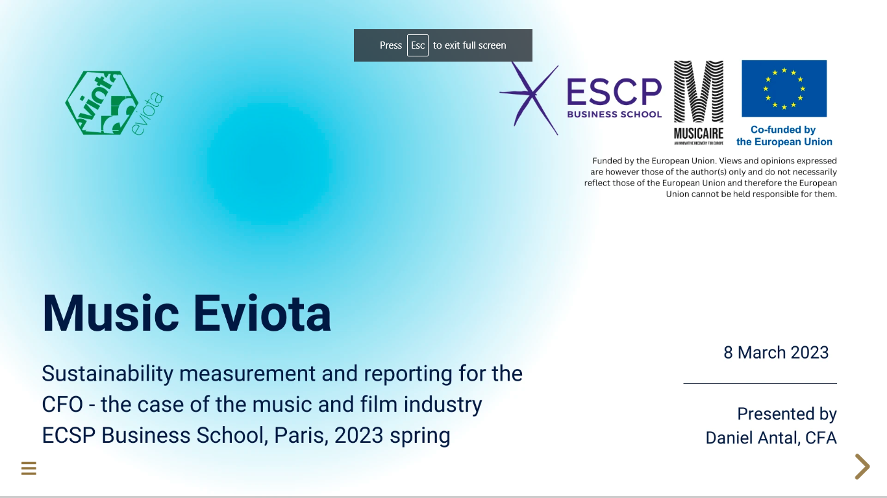
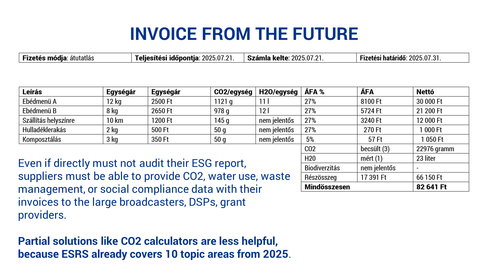

OpenProductions
Daniel Antal ![]()
Introducing OpenProductions
OpenProductions is a collaborative project of Reprex, ESCP, DAE, GreenEyes, open for other partners to work with us. We have successfully competed in the EIT CCI KIC’s Breakthrough Lab competition and were selected for funding pending fulfilling various conditions. While our extremely high score in this competition gives us confidence in the professional quality of our project, it leaves the start date and funding of OpenProductions is an open question.
We aim to support the film, television and video industry with solutions to create at acceptable costs in the entire value chain’s integrated reports. Integrated reports mean that large film producers and distributors, including TV channels, are able to consolidate and report data:
connected (or integrated) with their financial bookkeeping, accounting and reports;
their own corporations as well as their suppliers (
Scope 3)environmental impacts on climate change, water use, pollution, waste management, and recycling (standardised by ESRS
E1-E5);the various aspects of social sustainability (standardised by ESRS
S1-S4);and some governance issues, particularly copyright governance— because of the copyright infrastructure of film production, going beyond the needs of ESRS
G1.
The new requirement of integrated reporting — the auditable connection of economic activities and their financial footprint to five areas of environmental and four areas of social sustainability — requires a fundamental change in how the industry collects, records, stores, and reports knowledge and data about the production and post-production, the distribution and the archiving of its products, such as dramatic and documentary films, series, or various television programs.
These requirements will be in force from 2025 for large film production studios, streaming companies, and televisions stations in a way that will force their suppliers to provide them auditable data. The use of CO2 calculators that provide an estimate for the activities of each company in the production will be far from enough: there will be a need to report their suppliers (such as logistics firms, hotels) and of course, beyond CO2 and CH4 or other greenhouse gases, to report on dozens of more impacts.
Open Collaboration
We carry out an open collaboration in research and development in four layers or preparing intelligent, trustworthy AI-driven applications. By open collaboration, we mean the agile development methods of open source software and open knowledge products, like Wikibase, which allow constructive cooperation among large and small innovators, from the R&D departments of big corporations and research institutes to startups and even citizen scientists. This open collaboration is coordinated by Reprex, a member of the Dutch AI PPP and a prize-winning startup that grew out of the world’s second-ranked university-backed incubator, the Yes!Delft AI+Blockchain Lab.
As opposed to some competing products that are using machine learning without human oversight, we aim to support the work with legal professionals, qualified financial and sustainability reporting professionals and auditors with AI-driven applications that support their work. We do not want machine learning algorithms to guess or second-guess accounting software; we want to help accountants to connect their existing financial bookkeeping to exact environmental or social data.
We aim to build a solution that allows us to connect to existing systems:
- financial bookkeeping and accounting information as standardised by IFRS and the EU Accounting Directive,
- environmental bookkeeping, such as CO2 calculators,
- social bookkeeping, such as existing HR documentation services
- governance, such as rights management.
And link them to:
- standardised, science-based benchmarks and targets, particularly in the data warehouse of the European Environmental Agency,
- standardised survey data, questionbanks, to harmonise data collection on social sustainability indicators;
- global rights management databases;
- global archive catalogues and repositories.

Knowledge model layer
Our long-term goal is to build formal computer ontologies, i.e., an ontology encompasses a representation, formal naming, and definitions of the categories, properties, and relations between the concepts, data, or entities in the following workflows:
Film, television and video production;
Film, television and video post-production;
Film, television and video distribution;
Film, television and video archiving.
The ontologies help supervise AI applications in our application layer to properly connect information about the budgets (plans) and actual economic, environmental, social, and governance (copyright) bookkeeping of projects. The aim of the ontologies is to connect to every process. element in the workflow relevant knowledge about the five groups of environmental impacts (climate change, water use, waste, recycling, pollution); the impact as defined in the ESRS S1-S4 social sustainability standards, and specific governance issues.
We believe that this layer of our work should be publicly funded and be seen as a public good. Foundational ontologies are usually developed with basic research grants— we are looking for potential Horizon Europe project’s to join in with 1-2 foundational ontology (metadata, data harmonisation, research data management) tasks for this reason.
In the short term, we will curate existing ontologies and modify them to the needs of our first applications, based on our experience and exisitig Horizon Europe cooperation on music ontologies.
Data layer
Our long-term goal is the creation of the Green Film Observatory, a data observatory that contains all science-based benchmarks and targets for the EFRS E1-E5, S1-S4, G1 and copyright governance.
Our data governance is decentralised, allowing the mixing of public and private datasets. The more datasets are public, the better because it causes a huge multiplication of costs if various businesses, national associations, and research projects develop the same datasets in parallel. For example, we believe that the CO2 or CH4 methane coefficients for every year, country and potential (CPA) product or activity (NACE) in the supply chain should be available for all in our observatory instead of forcing every stakeholder to re-create this dataset.
Some datasets will always remain public; the knowledge model layer and formal ontologies help connect the relevant private data (for example, accounts or account groups in the financial general ledger of a particular dramatic series production) with the potentially public data (country, year-specific CO2, CH4, H2O) coefficients for the account.
Application layer

While the CSRD Directive directly does not apply to most film production companies because of their small size, they will need to prepare to provide reliable information to remain in the value chain of large media companies or to access triple transition grants, green financing and green insurance. We are developing collaborative and open source components to keep compliance costs affordable for non-profit, documentary film-makers and SMEs in the film, television and video supply chains.
Eviota MVP
Eviota for Music was developed with a microgrant within the Music Moves Europe Program’s MusicAIRE project, is an MVP of connecting consistently IFRS-standard financial microdata (from general ledgers) with science-based benchmarks for double materiality testing, impact analysis, and impact estimation (when estimation is sufficient and direct measurement of the impact, for example, with gas sensors) is not required.

The Eviota applications’ critical competitive advantage compared to other ESG solutions is that because of its top-down approach, it starts with a double materiality test and can rule out up to 95% of unnecessary data entry or data acquisition. The competitive advantage compared to current film industry solutions, such as various CO2 calculators, is that it
- Eviota is able to work consistently with all five of the environmental impact groups under ESRS (i.e., water, biodiversity, pollution, waste management beyond climate change;)
- It can also work with social sustainability impacts.
Open source for scientific review and audit
The Eviota applications rely on the methodology and some of the impact assessment models of iotables, our input-output economics, and economic, environmental, and social impact assessment scientific software, which has gone through several versions and peer-reviewed releases.

It has been under development since 2017 by Reprex and its co-founder, Daniel Antal. We keep this essential element of our application layer open to allow scientific, statistical peer-review and/or financial and sustainability audit to our code.
Educational layer
Our short and medium-term goal is to train managers in film, audiovisual and creative industries and small creators to integrate sustainability into their core business management activities with a strong focus on management control systems, i.e., how they plan, measure, review and report their film (post-)production, distribution, and archiving activities regarding both the economic/financial and the environmental and social aspects. Our partner in achieving this aim is ESCP, a leading European business school with a long track record in programs for media, cultural, and creative industries and a recent strong mission in sustainability management.
OpenProductions addresses a key question in management and accounting fields: integrating the new sustainability key performance indicators into the existing ways of measuring performance measurement systems and the practice of target setting and review for sustainability.
Business administration and tertiary education
The ESCP department participating in OpenProductions has teaching expertise in the challenges related to the rise of sustainability reporting. Research into existing practices in the past ten years has found that the ever more extensive reports on emissions are not sufficiently tied to the core business objectives, and therefore, environmental and social issues are managed separately from financial and other core KPIs.
We generate a knowledge exchange with top students where they become acquainted with a relevant solution to a core performance management problem and develop analysis and recommendations for OpenProductions users and clients. We do this in the context of a select number of ESCP Masters courses on performance measurement and management, where we survey different ways of integrating core (financial) and sustainability (ESG) systems.

We introduce OpenProductions as a new and innovative approach to integrating these systems, achieving a real transition. We work with the students to develop the interpretation of the connected financial and sustainability reports for users in the creative and cultural industries; to analyse, critique and improve OpenProductions; and to carry out research related to the OpenProductions offering, such as comparing with other conceptual frameworks and technological solutions such as emissions calculators.
Vocational training and post-secondary education
While ESCP’s research activities focus on the level of business leadership, we are aware of the acute need to train administrative-level workers (business or sustainability assistants to more senior sustainability and production managers) to work with ESG applications.
GreenEyes has finished the execution of a vocational training program in Budapest in the MOME Open Platform (the vocational training arm of the MOME University), with the support of the National Film Institute, with the first batch of 21 sustainability manager assistants who will be working in the EU’s largest production hub, Budapest.
Based on the experience with the first training, we would like to find ways to make this training program available to other large film production clusters in Europe and, potentially, create a MOOC version of the course. Generally, our experience shows that even short-term, intensive vocational training can make a change and prepare the ground for applying OpenProductions, or any new ESG management tools.
Standardisation layer
In some industries, the predecessor of CSRD (the Non-Financial Disclosure Directive) and the global standardisation of the GRI and GHG sustainability standards create solid experiences with integrated financial and sustainability reporting; this is not the case in the film, television and video industry or the music part of the audiovisual sectors. Introducing the industry-agnostic E1-E5, S1-S4 and G1 standards, which go way beyond the expectations of current CO2 calculators and other practices, will be a massive step for the industry in 2024/2025. We see that it was a wise move on behalf of the European Commission to delay the standardisation of further industry-specific standards.

We are inviting various representative bodies of the audiovisual sector, for example, EFAD, DAE, and the European Audiovisual Observatory, to make a joint effort to create the necessary knowledge models databases and systematically review evidence of the introduction of the industry-specific ESRS (at the same time with other service industries) and make a joint action plan to participate in EFRAG’s industry-specific standardisation later.